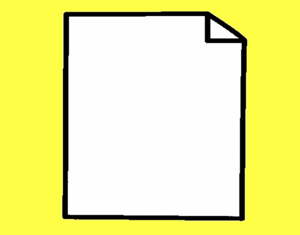
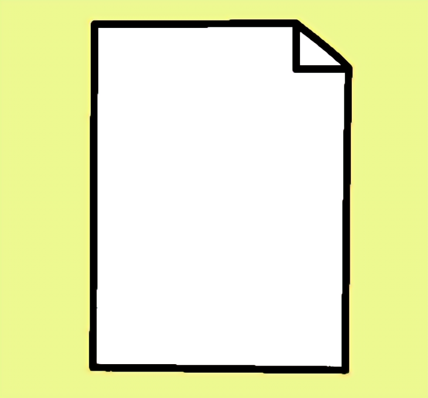
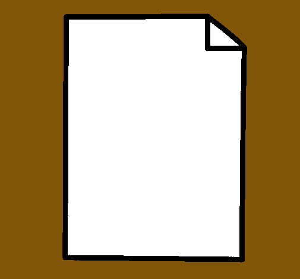
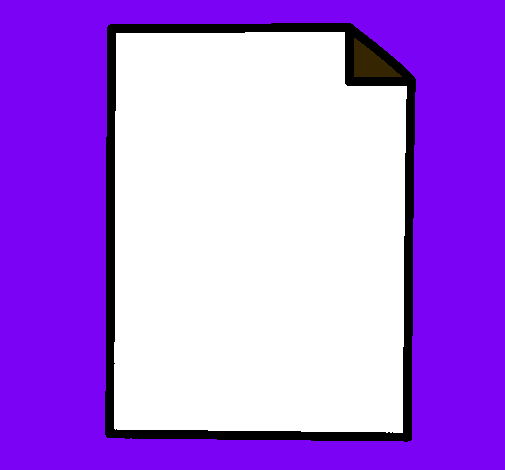
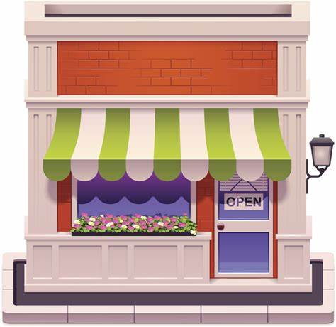

PROYECTOS. CONTACTO.
Hola, Soy Maily Chavez.
Como administradora de empresas,
me especializo en el seguimiento de proyectos,
asegurando que se cumplan los plazos y que
se alcancen los resultados esperados.
Me enfoco
en la planificación, ejecución y control de los
proyectos, trabajando en estrecha colaboración con
los miembros del equipo para alcanzar el éxito.
Mi enfoque en la excelencia y mi habilidad para resolver
problemas de manera efectiva me permiten superar los
desafíos y lograr resultados positivos.
| Es un proyecto que invita a los lectores a sumergirse en un océano de palabras poderosas y a explorar las emociones más íntimas a través de la magia de la poesía. Cada poema es una invitación a la introspección y a la conexión humana, creando un espacio donde las palabras se convierten en susurros del alma. | |
|  |
En este ejercicio se coloco el esqueleto para poder crear una página en HTML. |
|  |
En este ejecicio se coloco el como aprender a realizar un encabezado de una Pagina web. |
|  |
En este ejecicio se coloco el como agregarle saltos de líneas a los párrafos de una página web. |
| En este ejrcicio se aprendio a colocarle letra grande a un párrafo de una página. | |
|  |
En este ejecicio se aprendio a colocarle distintos colores a un párrafo de una página. |
| En este ejecicio se aprendio a a poder centrar, colocar a la derecha o a la izquierda un párrafo de un sitio web. | |
| En mi portafolio, encontrarás una selección de mis mejores trabajos, que abarcan desde logotipos, slogan, fotografías, etc. Cada proyecto ha sido cuidadosamente creado con atención al detalle y con un enfoque en la satisfacción del cliente. | |
| Aquí encontrarás una amplia variedad de personas, cada una con su propia historia y experiencia. Nuestra lista de contactos está llena de individuos interesantes y talentosos, dispuestos a establecer conexiones y compartir conocimientos. | |
| En nuestro catálogo, encontrará una variedad de estilos, colores y tallas que se adaptan a cada tipo de cuerpo y preferencia personal. Nuestro objetivo es ayudar a cada pareja a encontrar su conjunto perfecto para su día especial, creando recuerdos que durarán toda la vida. | |
| Esta lista puede estar clasificada alfabéticamente, por orden de importancia o por algún otro criterio predefinido. La finalidad de esta lista es facilitar la búsqueda y referencia de nombres de manera rápida y eficiente. Al tener una estructura ordenada, los nombres se presentan de forma sistemática, lo que facilita su identificación y localización. | |
| Los animales son una parte fundamental de nuestro mundo y existen en una amplia variedad de formas y tamaños. En esta lista desordenada de animales, encontrarás una fascinante diversidad de especies que habitan en diferentes entornos y cumplen roles únicos en el ecosistema. | |
|  |
Mi pastelería no solo se trata de crear postres deliciosos, sino también de crear momentos especiales para las personas. Desde celebraciones de cumpleaños hasta bodas y eventos corporativos, estoy comprometido en hacer realidad los sueños de mis clientes a través de pasteles y postres personalizados que se convierten en el centro de atención de cualquier ocasión. |
| Me embarqué en la emocionante tarea de diseñar y desarrollar un menú visualmente atractivo y funcional. Mi objetivo principal era crear una experiencia gastronómica única para los comensales, que les permitiera explorar una variedad de sabores y platos exquisitos. |